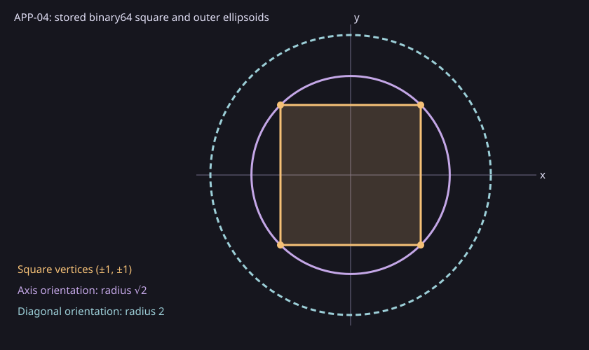

Controlled Systems Lab · APP-04
Saved single-adapter observations of the public APP-04 approximation route.
| Case | V vertices (x,y) | Orientation B | Projected bounds m |
|---|---|---|---|
horizontal-segment app04.report.segment/1 | [[-1, 0], [1, 0]] | [[1, 0], [0, 1]] | [1, 0] |
square-axis app04.report.axis/1 | [[-1, -1], [1, -1], [1, 1], [-1, 1]] | [[1, 0], [0, 1]] | [1, 1] |
square-diagonal app04.report.diagonal/1 | [[-1, -1], [1, -1], [1, 1], [-1, 1]] | [[1, 1], [1, -1]] | [2, 2] |
All centers are (0,0), labels are x and y, the requested relation is outer, assurance is numerical, and the size budget is one ellipsoid. The native adapter computes finite radii satisfying r_i² ≥ 2m_i².
For the axis square, m=(1,1), r=(√2,√2) rounded upward. Each vertex has two squared normalized terms of at most 1/2, so every vertex lies in the ellipsoid. Convexity encloses the whole square. The diagonal orientation yields m=(2,2) and a circle of radius 2 in physical coordinates. The segment has m=(1,0); its second projected coordinate is an equality and its shape is rank one.

| Case | Verified calls | Median batch (ns) | Range (ns) |
|---|---|---|---|
| square-axis | 700 | 921200 | 895800–1029800 |
| square-diagonal | 700 | 1114800 | 1087600–1132300 |
| horizontal-segment | 700 | 607900 | 596700–615400 |
Each batch sums 100 separately timed public run_registered calls. One 100-call warmup per case was excluded, followed by seven rotated batches per case. The timed interval includes registry selection, new workspace, construction and independent policy admission. Fixture setup, literal post-call checks, serialization and rendering are outside it. There were zero observed failures. These single-adapter durations are descriptive; no competitor or speedup is claimed.
Source commit 5c11288e436f41ae832ab6ac89e180f6cf00a43d; host DESKTOP-S9O3F6S; OS Windows-11-10.0.22631-SP0; Release x64 with HiGHS and Qhull disabled. The saved build receipt, CMake cache, driver source and raw records bind this report to that build.
Claims concern exact sets defined by stored binary64 coefficients. There is no validated rounding guarantee for earlier model computations, finite approximation error bound, minimum-volume result, MATLAB or Ellipsoidal Toolbox comparison, source-mapped limiter, or scalability claim.
Reproduce from a clean checkout at the source commit with python scripts/reports/app04/capture.py --source <checkout> --capture <new-directory> --commit 5c11288e436f41ae832ab6ac89e180f6cf00a43d --cmake <cmake>, then run collect.py and render_saved.py on the saved capture. The ZIP contains the report and raw data for offline reading.
Immutable report ID: app04-ellipsoid-fd302c34092f8b19